![[DBPP]](pictures//asm_color_tiny.gif)


![[Search]](pictures//search_motif.gif)
In the next three sections, we develop parallel algorithms for atmosphere modeling, VLSI design, and computational chemistry problems. These case studies are intended to illustrate both the design principles presented in the text and the stepwise process by which realistic parallel algorithms are developed.
While the problems examined in these case studies are of considerable interest in their own right, our interest here is in their computational characteristics. The atmosphere modeling application is an example of a problem amenable to parallelization by using simple domain decomposition techniques. It is representative of a wide range of scientific and engineering computations. The VLSI design problem is an example of an irregular problem requiring load-balancing techniques. It is representative of many symbolic computing problems. Finally, the computational chemistry application is an example of a problem requiring asynchronous access to distributed data structures, a requirement that arises frequently in both numerical and symbolic computing.
In each case study, we first briefly introduce the problem being solved and then develop parallel algorithms. We restrict the problem descriptions to essential computational issues and omit details that would add to the length of the presentation without illustrating new principles. In particular, we do not say much about why the underlying scientific or engineering problem is formulated in the way described, or about alternative problem formulations that might admit to alternative parallelization strategies. The chapter notes provide pointers to detailed treatments of these topics.
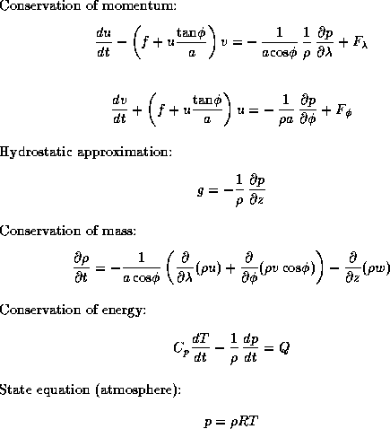
Figure 2.20: The basic predictive equations used in atmospheric
modeling, where and are latitude and longitude,
z
is height, u
and v
are horizontal components of
velocity, p
is pressure, is density, T
is
temperature, f
is Coriolis force, g
is gravity,
F
and Q
are external forcing terms, is specific
heat, and a
is the earth's radius.
An atmosphere model is a computer program that simulates atmospheric processes (wind, clouds, precipitation, etc.) that influence weather or climate. It may be used to study the evolution of tornadoes, to predict tomorrow's weather, or to study the impact on climate of increased concentrations of atmospheric carbon dioxide. Like many numerical models of physical processes, an atmosphere model solves a set of partial differential equations, in this case describing the basic fluid dynamical behavior of the atmosphere (Figure 2.20). The behavior of these equations on a continuous space is approximated by their behavior on a finite set of regularly spaced points in that space. Typically, these points are located on a rectangular latitude-longitude grid of size 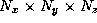, with 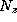 in the range 15--30, 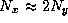, and 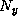 in the range 50--500 (Figure 2.21). This grid is periodic in the x and y dimensions, meaning that grid point 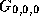 is viewed as being adjacent to 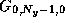 and 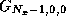. A vector of values is maintained at each grid point, representing quantities such as pressure, temperature, wind velocity, and humidity.
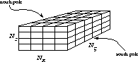
Figure 2.21: The three-dimensional grid used to represent the state of
the atmosphere. Values maintained at each grid point represent
quantities such as pressure and temperature.
The atmosphere model performs a time integration to determine the state of the atmosphere at some future time, based on an initial state. This integration proceeds in a series of steps, with each step advancing the state of the computation by a fixed amount. We shall assume that the model uses a finite difference method (Section 2.3.1) to update grid values, with a nine-point stencil being used to compute atmospheric motion in the horizontal dimension, and a three-point stencil in the vertical (Figure 2.22).
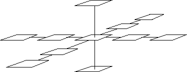
Figure 2.22: The finite difference stencils used in the atmosphere
model. This figure shows for a single grid point both the nine-point
stencil used to simulate horizontal motion and the three-point stencil
used to simulate vertical motion.
The finite difference computations are concerned with the movement, or fluid dynamics, of the atmosphere. In addition to these dynamics calculations, the atmosphere model includes algorithms used to simulate processes such as radiation, convection, and precipitation. These calculations are collectively termed physics and use a range of numerical methods of varying complexity. Data dependencies within physics computations are restricted to within vertical columns.
illustrates one of the many phenomena that can be simulated using an atmospheric circulation model. This shows a potential temperature isosurface of two thunderstorm downdrafts that hit the ground as microbursts, then spread out and collide. The surfaces outline the boundaries of the cold downdrafted air. The collision region contains wind fields that are dangerous to landing aircraft. The grey tiles are 1-kilometer squares and the model domain is km with 50 m resolution.

(GIF 30443 bytes; TIFF 723412 bytes.) Plate 4: Potential temperature isosurface of two colliding thunderstorm microbursts. Image courtesy of J. Anderson.
In summary, the atmosphere modeling example is primarily concerned with performing finite difference computations on a regular three-dimensional grid. In this respect, it is representative of a large class of scientific (numeric) computations. The simple, regular structure of the finite difference method makes it a useful pedagogical tool, and we shall use it repeatedly in the following chapters to illustrate issues in algorithm design and performance analysis.
We now develop parallel algorithms for the atmosphere modeling problem, proceeding in the stepwise fashion presented in earlier sections.
The grid used to represent state in the atmosphere model is a natural candidate for domain decomposition. Decompositions in the x , y , and/or z dimensions are possible (Figure 2.2). Pursuant to our strategy of exposing the maximum concurrency possible, we initially favor the most aggressive decomposition possible, which in this case defines a task for each grid point. This task maintains as its state the various values associated with its grid point and is responsible for the computation required to update that state at each time step. Hence, we have a total of tasks, each with data and computation per time step.
The design checklist of Section 2.2.3 does not suggest any obvious deficiencies in our partition design, so we proceed to consider communication requirements. We identify three distinct communications:
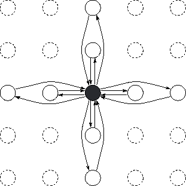
Figure 2.23: Task and channel structure for a two-dimensional finite
difference computation with nine-point stencil, assuming one grid
point per processor. Only the channels used by the shaded task are
shown.
where 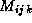 denotes the mass at grid point (i,j,k) . This sum can be computed using one of the parallel summation algorithms presented in Section 2.4.1.
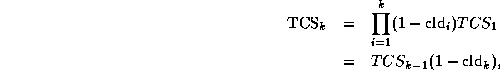
where level 0 is the top of the atmosphere and cld is the cloud
fraction at level i
. This prefix product
operation
can be performed in steps using a variant of the hypercube
algorithm of Section 2.4.1. In total, the physics component
of the model requires on the order of 30 communications per grid point
and per time step.
is the cloud
fraction at level i
. This prefix product
operation
can be performed in steps using a variant of the hypercube
algorithm of Section 2.4.1. In total, the physics component
of the model requires on the order of 30 communications per grid point
and per time step.
Let us evaluate this design by using the checklist of Section 2.3.5. The communication associated with the finite difference stencil is distributed and hence can proceed concurrently. So is the communication required for the global communication operation, thanks to the distributed algorithm developed in Section 2.4.1. (We might also consider performing this global operation less frequently, since its value is intended only for diagnostic purposes.) The one component of our algorithm's communication structure that is problematic is the physics. However, we shall see that the need for this communication can be avoided by agglomeration.
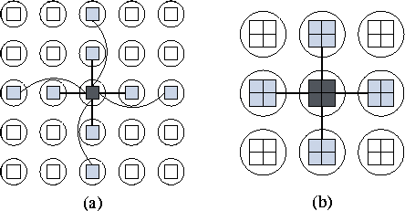
Figure 2.24: Using agglomeration to reduce communication requirements
in the atmosphere model. In (a), each task handles a single point
and hence must obtain data from eight other tasks in order to implement the
nine-point stencil. In (b), granularity is increased to 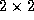
points, meaning that only 4 communications are required per
task.
Our fine-grained domain decomposition of the atmosphere model has
created  tasks: between and
tasks: between and  ,
depending on problem size. This is likely to be many more than we
require and some degree of agglomeration can be considered. We
identify three reasons for pursuing agglomeration:
,
depending on problem size. This is likely to be many more than we
require and some degree of agglomeration can be considered. We
identify three reasons for pursuing agglomeration:
This analysis makes it appear sensible to refine our parallel
algorithm to utilize a two-dimensional horizontal decomposition of the
model grid in which each task encapsulates at least four grid points.
Communication requirements are then reduced to those associated with
the nine-point stencil and the summation operation. Notice that this
algorithm can create at most 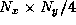 tasks: between
and  , depending on problem size. This number is likely to be enough
for most practical purposes.
, depending on problem size. This number is likely to be enough
for most practical purposes.
In the absence of load imbalances, the simple mapping strategy illustrated in Figure 2.16 can be used. It is clear from the figure that in this case, further agglomeration can be performed; in the limit, each processor can be assigned a single task responsible for many columns, thereby yielding an SPMD program.
This mapping strategy is efficient if each grid column task performs the same amount of computation at each time step. This assumption is valid for many finite difference problems but turns out to be invalid for some atmosphere models. The reason is that the cost of physics computations can vary significantly depending on model state variables. For example, radiation calculations are not performed at night, and clouds are formed only when humidity exceeds a certain threshold. The sort of variation in computational load that can result is illustrated in Plate 5.


(GIF 28536 and 156403 bytes; RGB 116173 and 919250 bytes.) Plate 5: Load distribution in an atmosphere model with a 64X128 grid. The figure shows per-point computational load at a single time step, with the histogram giving relative frequency of different load values. The left-hand image shows a time step in which radiation time steps are performed, and the right-hand image an ordinary time step. Diurnal, land/ocean, and local variations are visible. Images courtesy of J. Michalakes.
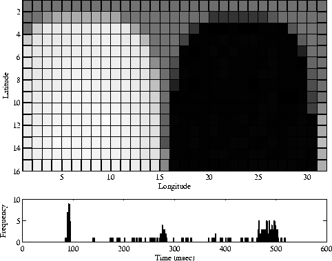
Figure 2.25: Load distribution in the physics component of an atmosphere
model in the absence of load balancing. In the top part of the
figure, shading is used to indicate computational load in each of
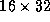 processors. A strong spatial variation is evident. This
effect is due to the night/day cycle (radiation calculations are
performed only in sunlight); hence, there is a temporal variation
also. The bottom part of the figure is a histogram showing the
distribution of computation times, which vary by a factor of 5. These
results were obtained by using a parallel version of the National
Center for Atmospheric Research (NCAR) Community Climate Model (CCM2)
on the 512-processor Intel DELTA computer.
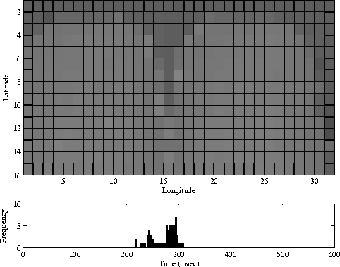
Figure 2.26: Load distribution in the physics component of CCM2
when using a cyclic mapping. A comparison with Figure 2.25 shows that
load imbalances are reduced significantly.
Empirical studies suggest that these load imbalances can reduce computational efficiency by 20 percent or more (Figure 2.25; see also Plate 5).
In many circumstances, this performance loss may be regarded as acceptable. However, if a model is to be used extensively, it is worthwhile to spend time improving efficiency. One approach is to use a form of cyclic mapping: for example, allocating each processor tasks from western and eastern and from northern and southern hemispheres. Figure 2.26 shows the reduction in load imbalance that can be achieved with this technique; this reduction must be weighed against the resulting increase in communication costs.
The design of a parallel atmosphere model has proved to be straightforward process, in that most design choices are clear-cut. A two-dimensional domain decomposition of the model grid results in a need for both local communication between tasks handling neighboring grid points and a parallel summation operation.
One unanswered question concerns whether load-balancing algorithms should be incorporated into the model. Because load balancing adds to the complexity of the overall design, this decision requires both performance data (of the sort presented in Figure 2.25) and information about the expected use of the parallel model. Another question, addressed in Chapter 4, is how the atmosphere model will fit into a larger framework such as the climate model of Figure 2.3.
© Copyright 1995 by Ian Foster